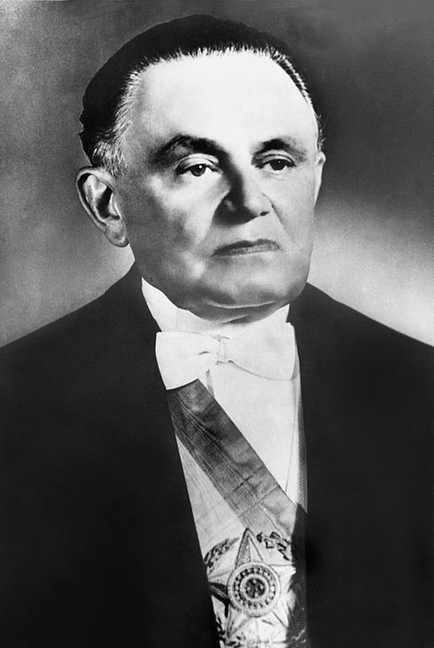

Ditadura Militar
A ditadura militar brasileira (caracterizada como um regime civil-militar) durou do dia 31 de março de 1964 a 15 de março de 1985, o período em que o país foi governado por sucessivos presidentes militares eleitos de uma forma indireta.
Principais características e fatos:
Origem:
O regime foi instaurado após um golpe que depôs o presidente que governava na época “João Goulart” no dia 31 de março de 1964, sob a justificativa de tentar combater a ameaça comunista e a crise política no contexto da Guerra Fria.
Atos institucionais e Repressão:
O governo impôs diverso atos institucionais (com destaque para o AI-5 em dezembro de 1968), fecharam o Congresso, cassaram mandatos, suspenderam garantias constitucionais, instauram a censura prévia á imprensa e legalizaram a perserguição, a tortura e o assassinato de opositores.
Presidentes Militares:
Humberto de Alencar Castelo Branco
(1964-1967)

Artur da Costa e Silva
(1967-1969)
Junta Militar
(1967-1969)
Emílio Garrastazu Médici
(1969–1974 - auge da repressão e do "milagre econômico")
Ernesto Geisel
(1974-1979 - início da “abertura lenta, gradual e segura”)
João Figueiredo
(1979-1985 - promulgação da lei da Anistia em 1979)